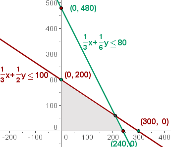
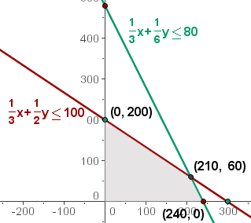
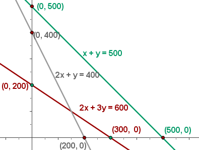
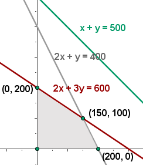
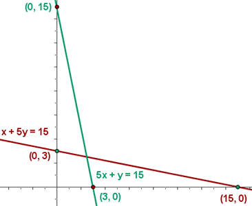
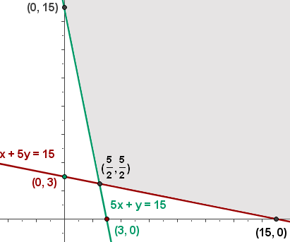
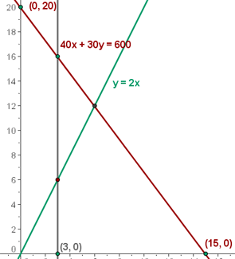
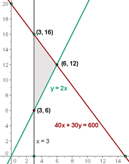

Linear Programming Word Problems
1A company manufactures and sells two models of lamps, L1 and L2. To manufacture each lamp, the manual work involved in model L1 is 20 minutes and for L2, 30 minutes. The mechanical (machine) work involved for L1 is 20 minutes and for L2, 10 minutes. The manual work available per month is 100 hours and the machine is limited to only 80 hours per month. Knowing that the profit per unit is $15 and $10 for L1 and L2, respectively, determine the quantities of each lamp that should be manufactured to obtain the maximum benefit.
2With the start of school approaching, a store is planning on having a sale on school materials. They have 600 notebooks, 500 folders and 400 pens in stock, and they plan on packing it in two different forms. In the first package, there will be 2 notebooks, 1 folder and 2 pens, and in the second one, 3 notebooks, 1 folder and 1 pen. The price of each package will be $6.50 and $7.00 respectively. How many packages should they put together of each type to obtain the maximum benefit?
3On a chicken farm, the poultry is given a healthy diet to gain weight. The chickens have to consume a minimum of 15 units of Substance A and another 15 units of Substance B. In the market there are only two classes of compounds: Type X, with a composition of one unit of A to five units of B, and another type, Y, with a composition of five units of A to one of B. The price of Type X is $10 and Type Y, $30. What are the quantities of each type of compound that have to be purchased to cover the needs of the diet with a minimal cost?
4There is only 600 milograms of a certain drug that is needed to make both large and small pills for small scale pharmaceutical distribution. The large tablets weigh 40 milograms and the small ones, 30 milograms. Consumer research determines that at least twice the amount of the smaller tablets are needed than the large ones and there needs to be least three large tablets made. Each large tablet is sold for a profit of $2 and the small tablet, $1. How many tablets of each type have to be prepared to obtain the maximum profit?
1
A company manufactures and sells two models of lamps, L1 and L2. To manufacture each lamp, the manual work involved in model L1 is 20 minutes and for L2, 30 minutes. The mechanical (machine) work involved for L1 is 20 minutes and for L2, 10 minutes. The manual work available per month is 100 hours and the machine is limited to only 80 hours per month. Knowing that the profit per unit is $15 and $10 for L1 and L2, respectively, determine the quantities of each lamp that should be manufactured to obtain the maximum benefit.
1Choose the unknowns.
x = number of lamps L1
y = number of lamps L2
2Write the objective function.
f(x, y) = 15x + 10y
3Write the constraints as a system of inequalities.
Convert the time from minutes to hours.
20 min = 1/3 h
30 min = 1/2 h
10 min = 1/6 h
| L1 | L2 | Time | |
|---|---|---|---|
| Manual | 1/3 | 1/2 | 100 |
| Machine | 1/3 | 1/6 | 80 |
1/3x + 1/2y ≤ 100
1/3x + 1/6y ≤ 80
As the number of lamps are natural numbers, there are two more constraints:
x ≥ 0
y ≥ 0
4 Find the set of feasible solutions that graphically represent the constraints.
Represent the constraints graphically.
As x ≥ 0 and y ≥ 0, work in the first quadrant.
Solve the inequation graphically: 1/3 x + 1/2 y ≤ 100; and take a point on the plane, for example (0,0).
1/3 · 0 + 1/2 · 0 ≤ 100
1/3 · 0 + 1/6 · 0 ≤ 80
The area of intersection of the solutions of the inequalities would be the solution to the system of inequalities, which is the set of feasible solutions.

5 Calculate the coordinates of the vertices from the compound of feasible solutions.
The optimal solution, if unique, is a vertex. These are the solutions to systems:
1/3x + 1/2y = 100; x = 0 (0, 200)
1/3x + 1/6y = 80; y = 0(240, 0)
1/3x + 1/2y = 100; 1/3x + 1/6y = 80(210, 60)

6 Calculate the value of the objective function at each of the vertices to determine which of them has the maximum or minimum values.
In the objective function, place each of the vertices that were determined in the previous step.
f(x, y) = 15x + 10y
f(0, 200) = 15·0 + 10·200 = $2,000
f(240, 0 ) = 15·240 + 10·0 = $3,600
f(210, 60) = 15·210 + 10·60 = $3,750 Maximum
The optimum solution is to manufacture 210 units of model L1 and 60 units of model L1 to obtain a benefit of $3,750.
2
With the start of school approaching, a store is planning on having a sale on school materials. They have 600 notebooks, 500 folders and 400 pens in stock, and they plan on packing it in two different forms. In the first package, there will be 2 notebooks, 1 folder and 2 pens, and in the second one, 3 notebooks, 1 folder and 1 pen. The price of each package will be $6.50 and $7.00 respectively. How many packages should they put together of each type to obtain the maximum benefit?
1Choose the unknowns.
x = P1
y = P2
2Write the objective function.
f(x, y) = 6.5x + 7y
3Write the constraints as a system of inequalities.
| P1 | P2 | Available | |
|---|---|---|---|
| Notebooks | 2 | 3 | 600 |
| Folders | 1 | 1 | 500 |
| Pens | 2 | 1 | 400 |
2x + 3y ≤ 600
x + y ≤ 500
2x + y ≤ 400
x ≥ 0
y ≥ 0
4 Find the set of feasible solutions that graphically represent the constraints.

5 Calculate the coordinates of the vertices from the compound of feasible solutions.

6 Calculate the value of the objective function at each of the vertices to determine which of them has the maximum or minimum values.
f(x,y)= 6.5 · 200 + 7 · 0 = $1,300
f(x,y)= 6.5 · 0 + 7 · 200 = $1,400
f(x,y)= 6.5 · 150 + 7 · 100 = $1,675 Maximum
The optimum solution is to package 150 units of package 1 and 100 units of package 2 to obtain $1,675
3
On a chicken farm, the poultry is given a healthy diet to gain weight. The chickens have to consume a minimum of 15 units of Substance A and another 15 units of Substance B. In the market there are only two classes of compounds: Type X, with a composition of one unit of A to five units of B, and another type, Y, with a composition of five units of A to one of B. The price of Type X is $10 and Type Y, $30. What are the quantities of each type of compound that have to be purchased to cover the needs of the diet with a minimal cost?
1Choose the unknowns.
x = X
y = Y
2Write the objective function.
f(x,y) = 10x + 30y
3Write the constraints as a system of inequalities.
| X | Y | Minimal | |
|---|---|---|---|
| A | 1 | 5 | 15 |
| B | 5 | 1 | 15 |
x + 5y ≥ 15
5x + y ≥ 15
x ≥ 0
y ≥ 0
4 Find the set of feasible solutions that graphically represent the constraints.

5 Calculate the coordinates of the vertices from the compound of feasible solutions.

6 Calculate the value of the objective function at each of the vertices to determine which of them has the maximum or minimum values. It must be taken into account the possible non-existence of a solution if the compound is not bounded.
f(0, 15) = 10 · 0 + 30 · 15 = 450
f(15, 0) = 10 · 15 + 30 · 0 = 150
f(5/2, 5/2) = 10 · 5/2 + 30 · 5/2 = 100 Minimum
The minimum cost is $100 for X = 5/2 and Y = 5/2.
4
There is only 600 milograms of a certain drug that is needed to make both large and small pills for small scale pharmaceutical distribution. The large tablets weigh 40 milograms and the small ones, 30 milograms. Consumer research determines that at least twice the amount of the smaller tablets are needed than the large ones and there needs to be at least three large tablets made. Each large tablet is sold for a profit of $2 and the small tablet, $1. How many tablets of each type have to be prepared to obtain the maximum profit?
1Choose the unknowns.
x = Large tablets
y = Small tablets
2Write the objective function.
f(x, y) = 2x + y
3Write the constraints as a system of inequalities.
40x + 30y ≤ 600
x ≥ 3
y ≥ 2x
x ≥ 0
y ≥ 0
4 Find the set of feasible solutions that graphically represent the constraints.

5 Calculate the coordinates of the vertices from the compound of feasible solutions.

6 Calculate the value of the objective function at each of the vertices to determine which of them has the maximum or minimum values.
f(x, y)= 2 · 3 + 16 = $22
f(x, y)= 2 · 3 + 6 = $12
f(x, y)= 2 · 6 + 12 = $24 Maximum
The maximum profit is $24 , and is obtained by making 6 units of the large tablets and 12 units of the small tablets.